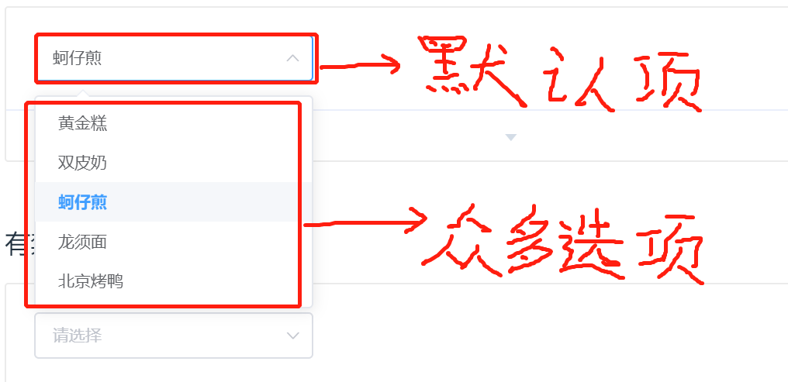

最近我在做angularjs程序时遇到了一个问题
1.页面有很多选择框，一个选择框里面有众多的选择项，和一个默认选定的项,像下面这样（很多选择框，不只一个）：

2.众多的选项要从后台接口得到，默认项从另一个后台接口得到，这就需要$promise.then（）操作
3.而多个$promise.then（）属于异步操作，先后顺序不是一定的，如果先得到众多选项，后得到默认值，显示就没有问题，如果顺序颠倒，默认项就会为空，这不是我想要的
4.这就需要众多选项的后台请求都获得完，才去后台请求默认值，
就用$q.all方法
let list = $q.all({ // 多个后台请求，部分先后顺序
url1: getUrl1().$promise,
url2: getUrl2().$promise,
url3: getUrl3().$promise,
});
$scope.list.then(function (result) {
// 三个后台请求结果
result.url1
result.url2
result.url3
}).finally(function () { // finally的优点：1.无论成功失败都会执行 2.前面三个请求结束后才会执行
// 最后一个后台请求
// TODO
});
补充：当然还有then().then().then()......这种方法，就把请求顺序执行了，不过select众多选项的后台请求不需要先后顺序，只是默认项需要最后执行，我就选择$q.all这种方法了